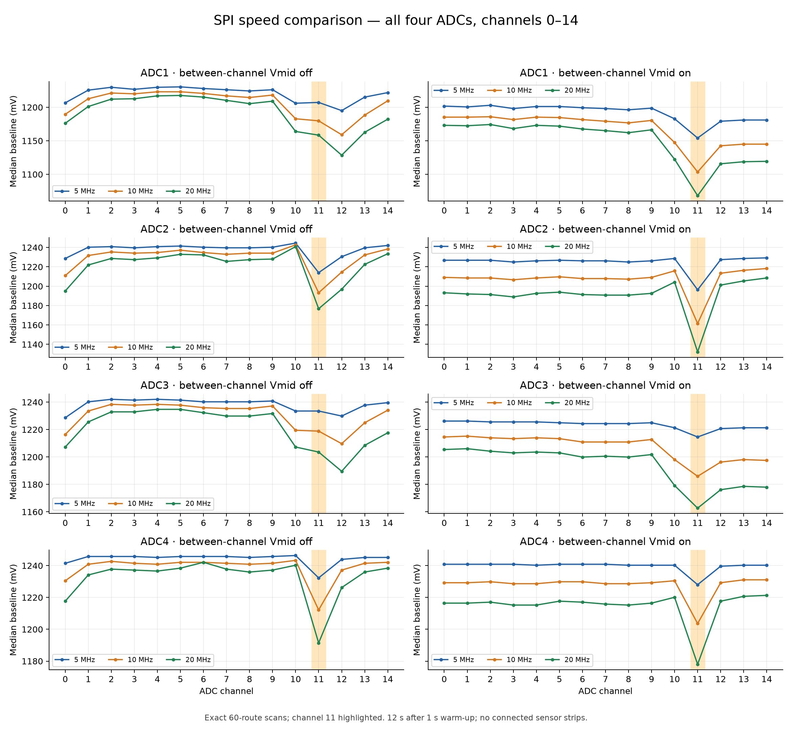
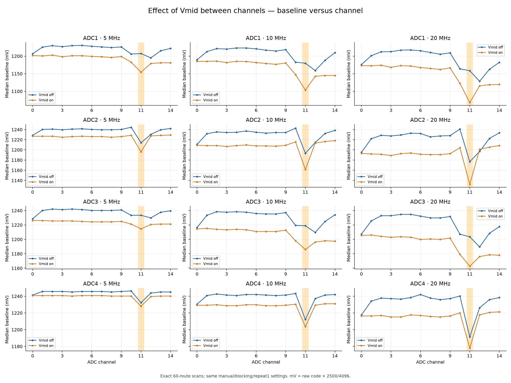
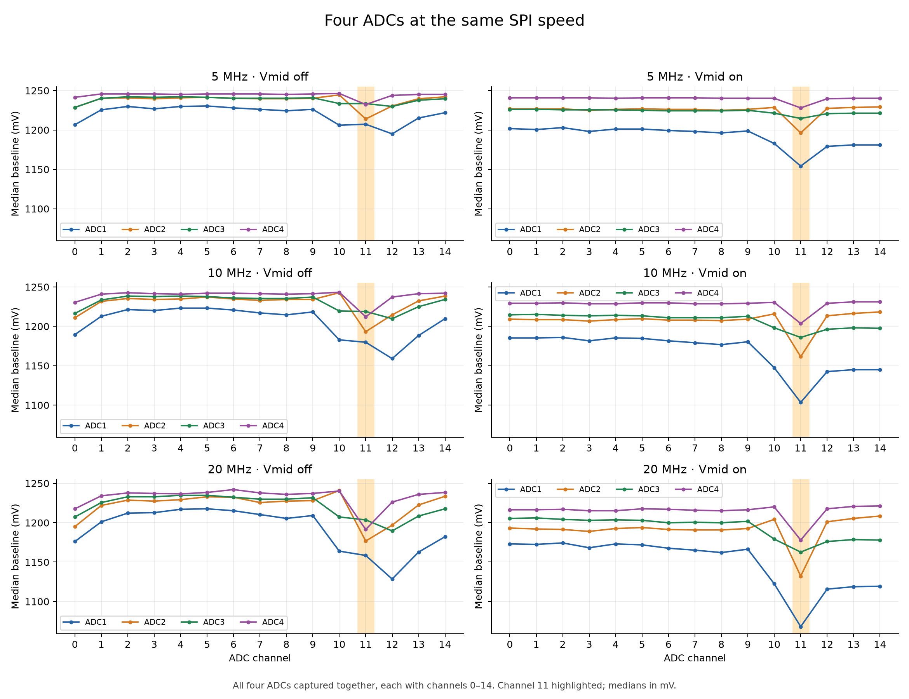
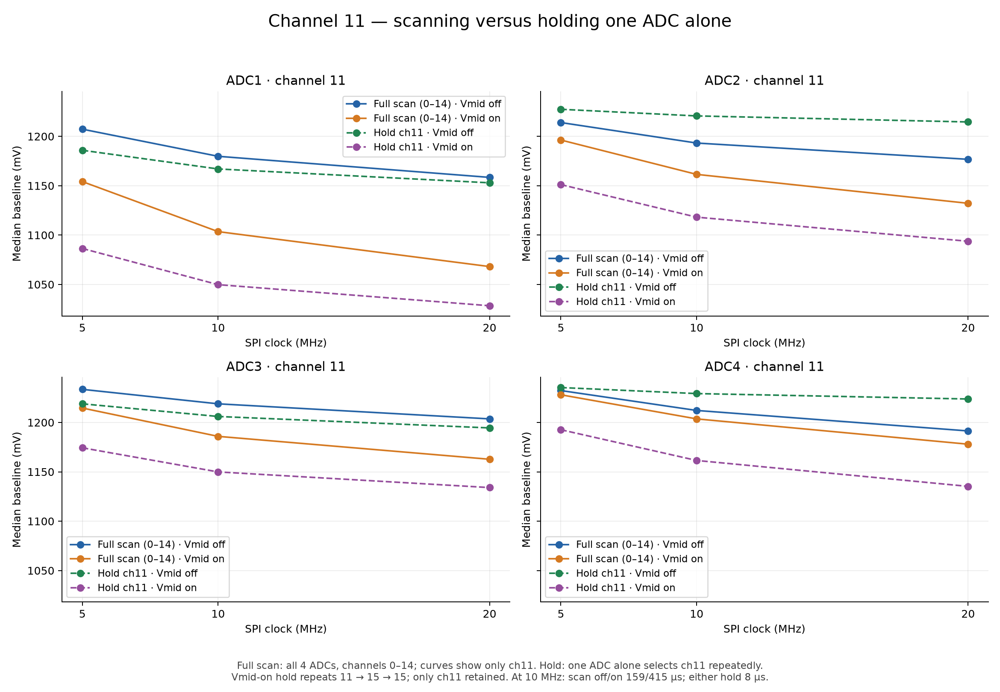
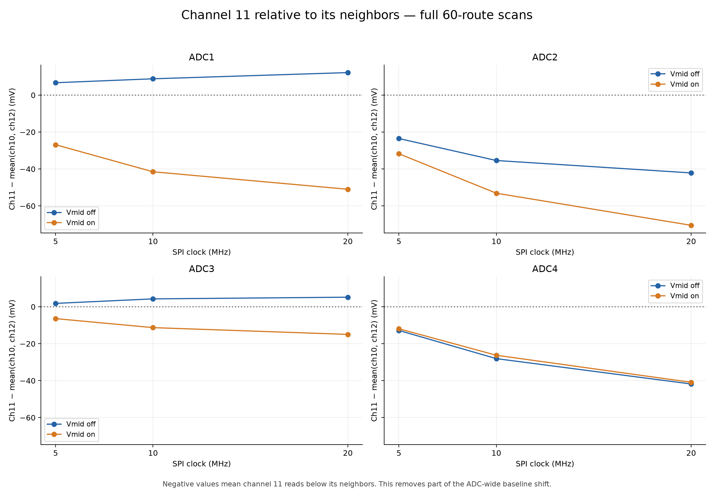
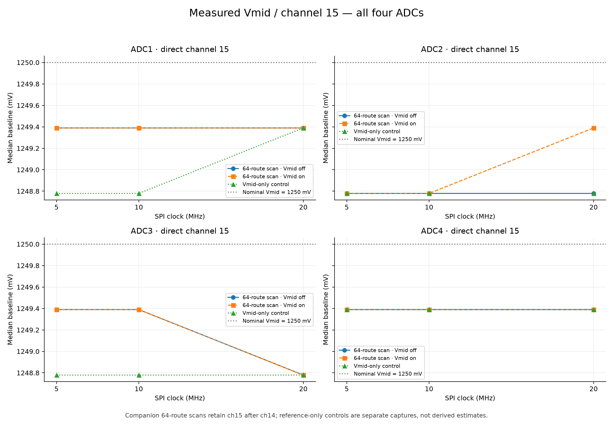
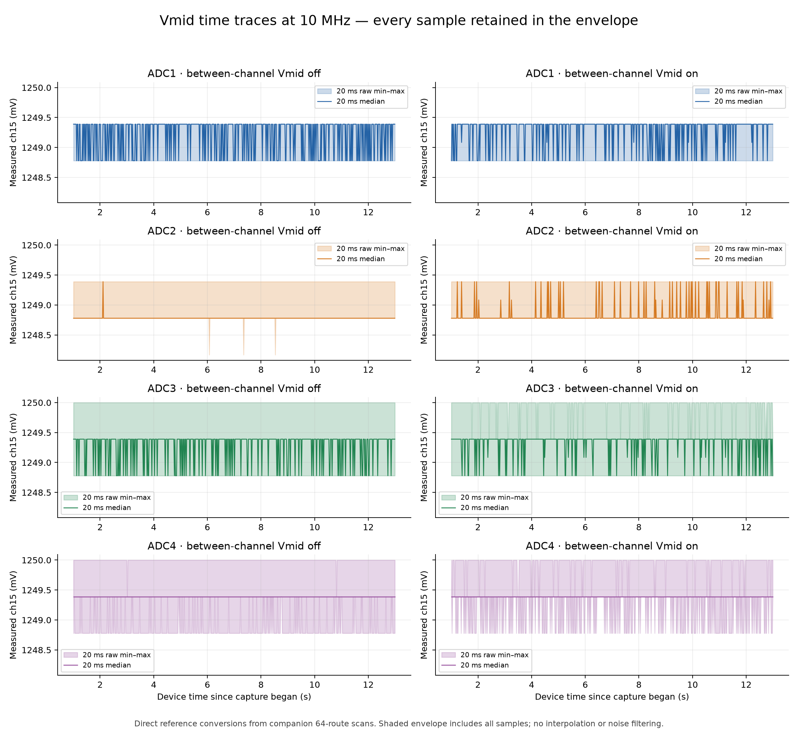

9 October 2026 · Both sensor strips unplugged · Laptop charger connected
| ADC | Vmid bias resistor | Channels routed to connector | PZT groups on connector |
|---|---|---|---|
| ADC1 | 1 MΩ | 0–9 | PZT6, PZT7 |
| ADC2 | 470 kΩ | 0–14 | PZT1, PZT3, PZT5 |
| ADC3 | 470 kΩ | 0–9 | PZT6, PZT7 |
| ADC4 | 249 kΩ | 0–14 | PZT1, PZT3, PZT5 |
This table describes the board wiring; both sensor strips were unplugged during these tests. Each bias resistor connects Vmid to the shared MXO / OPA365 input, rather than to individual channels. Channel 15 is the Vmid reference on every ADC.
The measured reference stays near 1250 mV while channel-11 baselines depend on SPI speed and selection history. Vmid insertion lowers channel 11 in every single-ADC hold pair, including ADC1 and ADC3. This supports a dynamic analog-path explanation; it does not identify the exact mechanism.
With Vmid off, channel 11 is below its neighbors on ADC2/ADC4, but slightly above them on ADC1/ADC3. With Vmid on, it is below its neighbors on all four ADCs.
40 captures, 39,615,388 received sweeps. Production firmware restored and stopped; COM3 closed. All graphs use nominal mV = raw code × 2500/4096.
| ADC | Scan, Vmid off | Scan, Vmid on | Hold, Vmid off | Hold, Vmid on |
|---|---|---|---|---|
| ADC1 | 1179.81 | 1103.52 | 1166.99 | 1049.80 |
| ADC2 | 1193.24 | 1161.50 | 1220.70 | 1118.16 |
| ADC3 | 1218.87 | 1185.91 | 1206.05 | 1149.90 |
| ADC4 | 1212.16 | 1203.61 | 1229.25 | 1161.50 |
Each ADC, channels 0–14, at 5/10/20 MHz; Vmid off and on.

The same clock and routes; each ADC plotted separately.

All four ADCs overlaid, including previously unused channels 10–14 on ADC1/ADC3.

Full scan: all four ADCs scan channels 0–14, with only channel 11 shown here. Hold: one ADC alone selects channel 11 repeatedly; with Vmid on, it repeats 11 → 15 → 15 and retains only channel 11. At 10 MHz, a full scan produces one channel-11 result per ADC about every 159 µs with Vmid off or 415 µs with Vmid on. Either single-ADC hold mode produces a retained channel-11 result about every 8 µs. Comparing a scan with a hold therefore changes both selection history and sampling cadence.

Negative values show a channel-11 deficit after removing the neighboring baseline level.

Companion full scans versus separate reference-only controls.

10 MHz examples, all ADCs, Vmid off/on; every raw sample contributes to each 20 ms min–max envelope.
